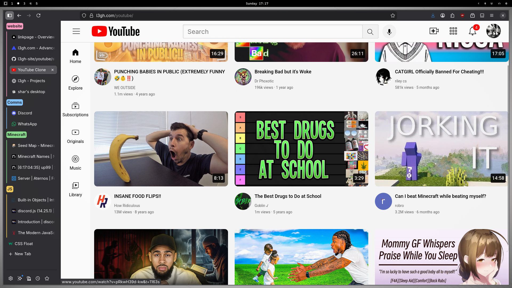
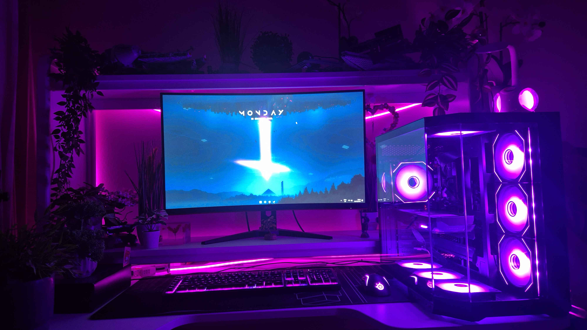
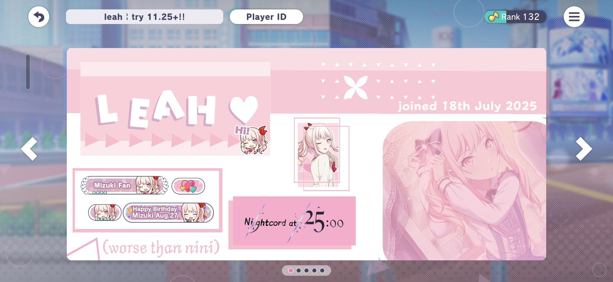
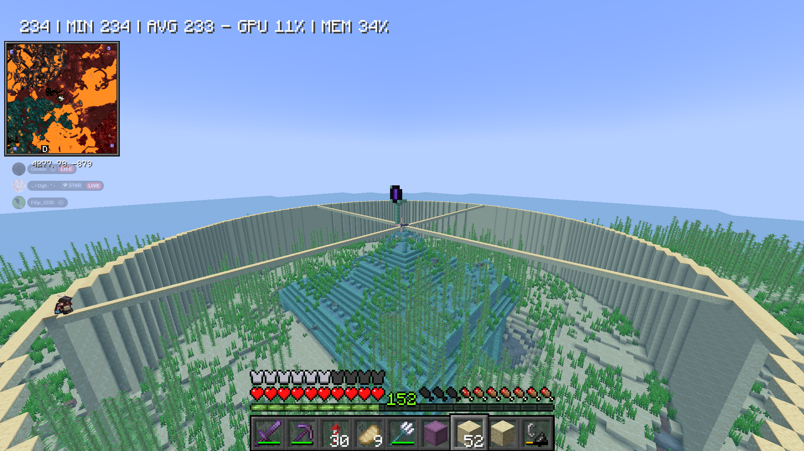

Go to gaming

Learning HTML - Youtube Reconstruction
ive be ive been learning HTML so i need a "project" to test my abilities right? I made this recreation of youtube alongside the l3gh.com site as practice!

My Setup
Yes.. this is how my setup currently looks (I'll update this, correct as of december 2025)
Fortnite - Unreal
In my time playing Fortnite I've hit unreal twice!! My best global placement was top30k and one time i even got unreal from my phone.. (screenshot above is from a phone)

Project SEKAI
Pjsk is currently my main game!! I love it! Huge shoutout to nini for showing me this gem.

Minecraft
Oh minecraft.. Where do i start... I could make a whole gallery out of my megabuilds but i dont feel like it so this is just my most recent one - an ocean monument! I fully drained it but i don't have any new screenshots so this will have to do. I've built temples, houses, perimeters, towers, bases, farms,.. everything.